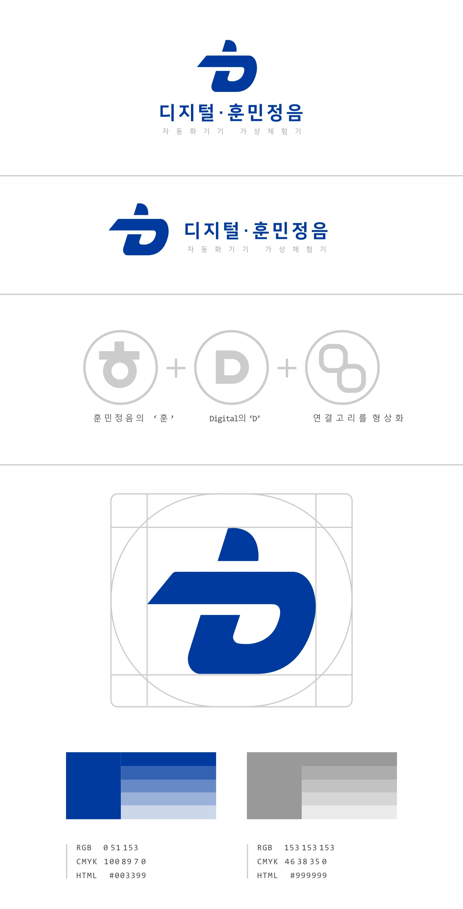
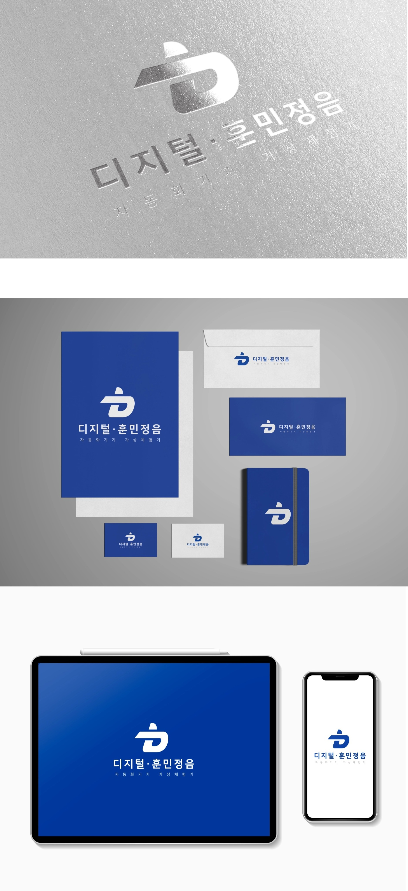
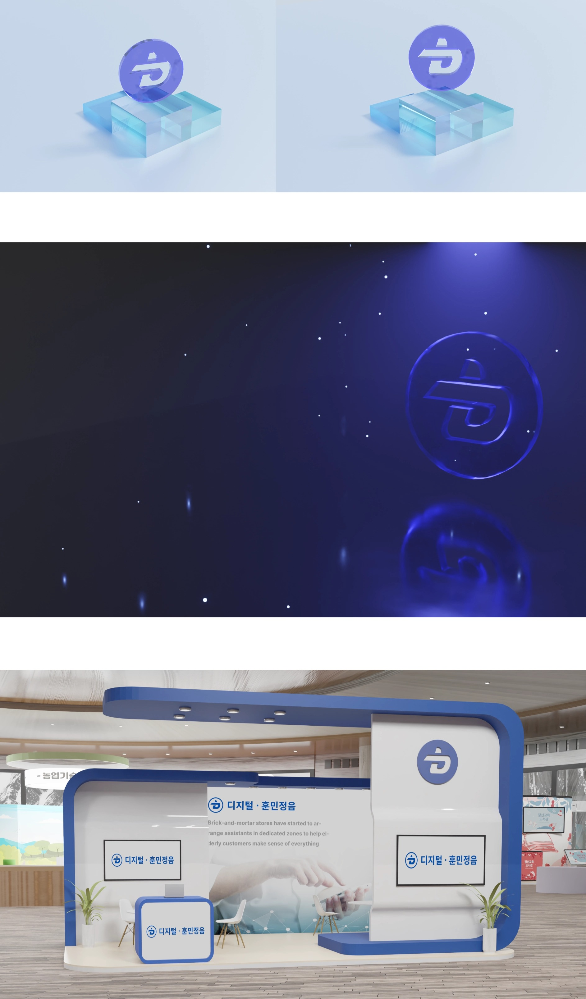
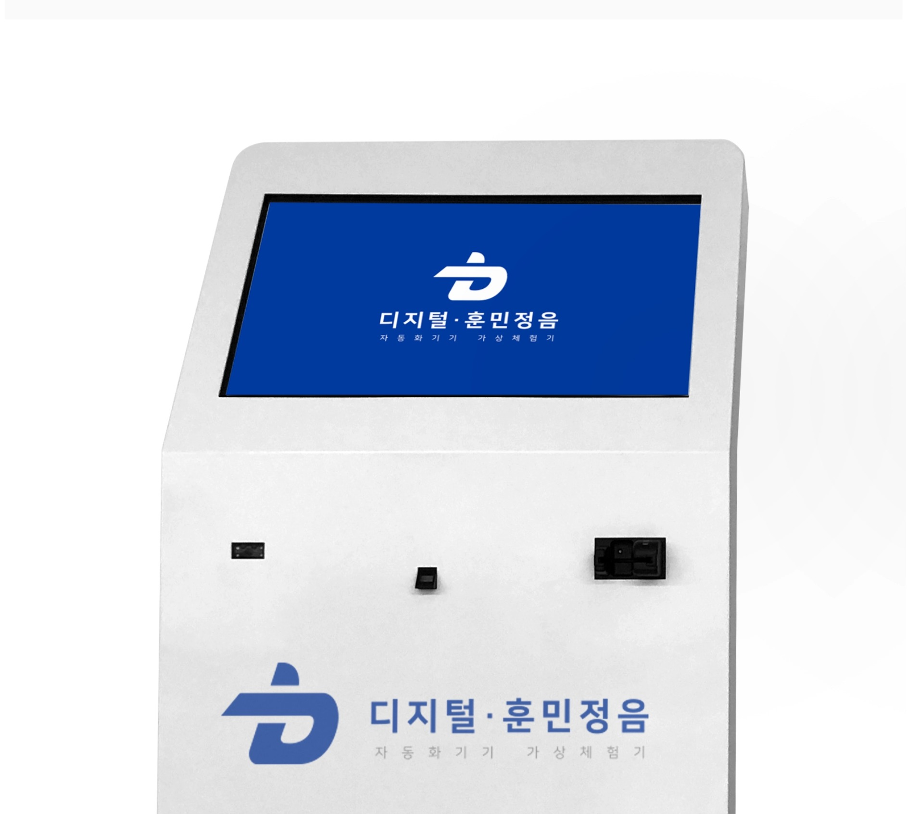

회사 서비스 BI 리뉴얼
재직 중 대표님께서 디지털 훈민정음 서비스의 로고를 리뉴얼 해보자는 제안을 주셨고,
이를 바탕으로 로고를 제작하였습니다.
이를 바탕으로 로고를 제작하였습니다.
아이디어
핵심 아이디어는 외래어 ‘디지털’의 시작인 ‘D’와 한글의 ‘ㅎ(히읗)’을 하나의 획으로 연결하는 것이었습니다.

핵심 원리
이어지는 선은 과거의 지혜가 현대의 기술로 연결되고,
지식이 위에서 아래로 자연스럽게 전달되는 훈민정음의 원리를 상징합니다.

지식이 위에서 아래로 자연스럽게 전달되는 훈민정음의 원리를 상징합니다.
활용예시 1
명함, 판촉물, 기념품

활용 예시 2
3D 이미지, 영상

총평/아쉬운점
서비스의 의미를 담아내는 방향은 만족스러우나,
브랜드 가이드라인은 명확히 정립하지 못함
브랜드 가이드라인은 명확히 정립하지 못함
